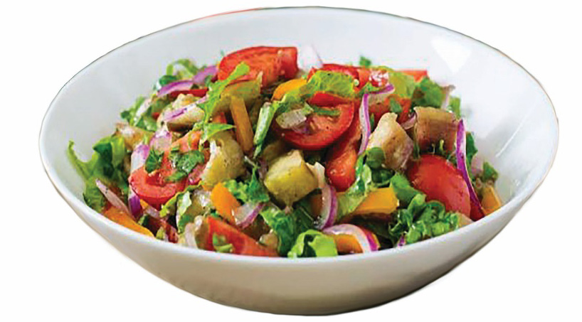

Food and Human Nutrition
Form Two
1 medium tomato
2 ml lemon juice
1 green pepper
1 onion
2 g salt
1 lettuce leaf
Method
1. Wash and slice the carrot, cucumber, green pepper, onion, lettuce leaf and tomato.
2. Mix them together in a bowl then add lemon juice.
3. Serve the mixed vegetable salad as required. Figure 3.17 shows mixed vegetable salad.
Note: Salad dressing can be added to a mixed vegetable salad if desired.

Figure 3.17: Mixed vegetable salad
Activity 3.10
Preparation of mixed vegetable salad
Prepare, cook and serve a mixed vegetable salad by following the appropriate methods.
Explain points to consider when preparing salads.